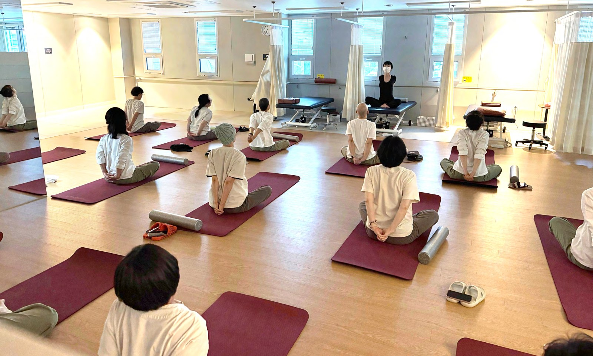
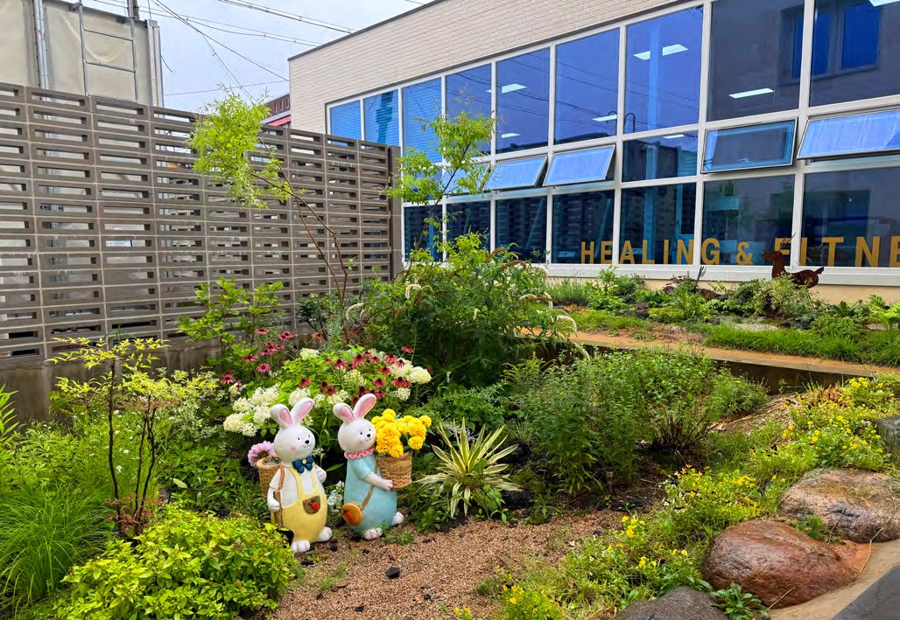
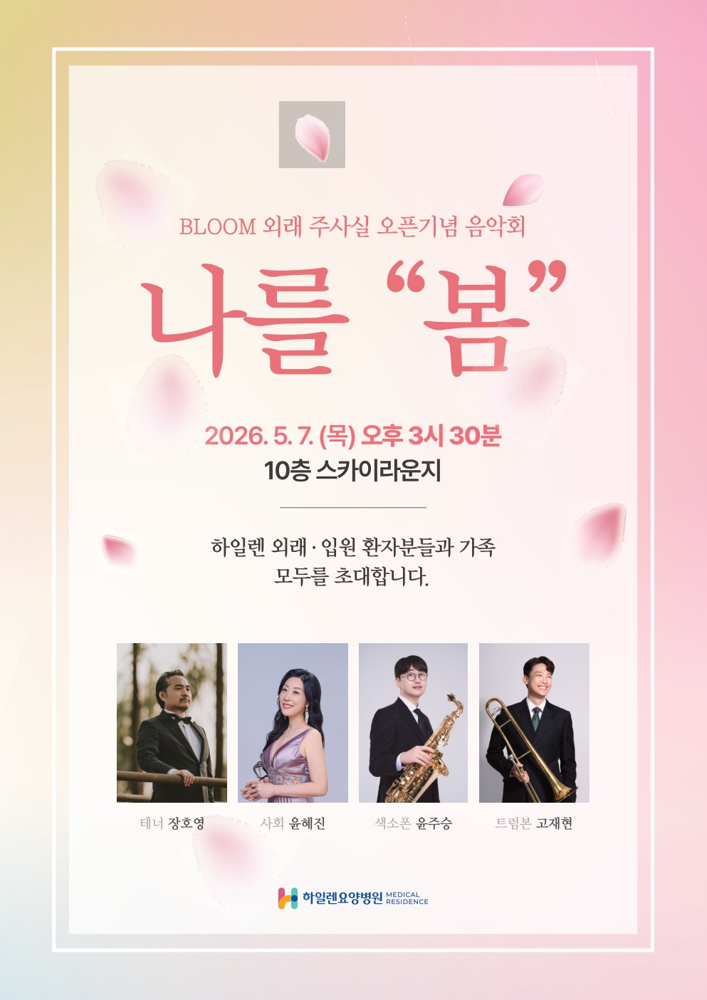
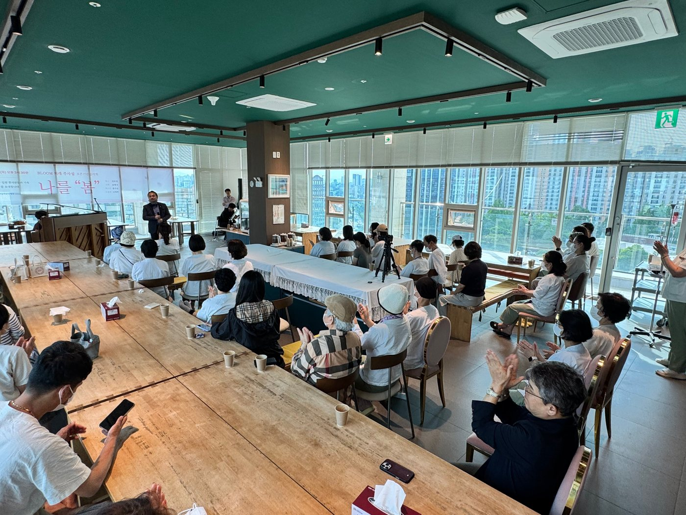
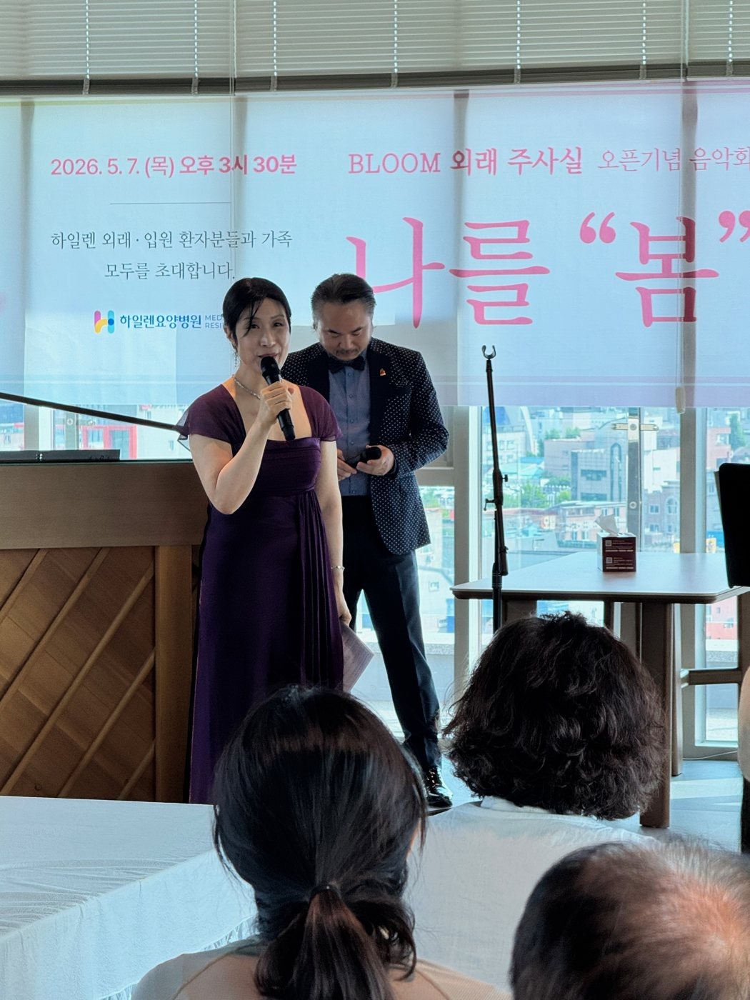
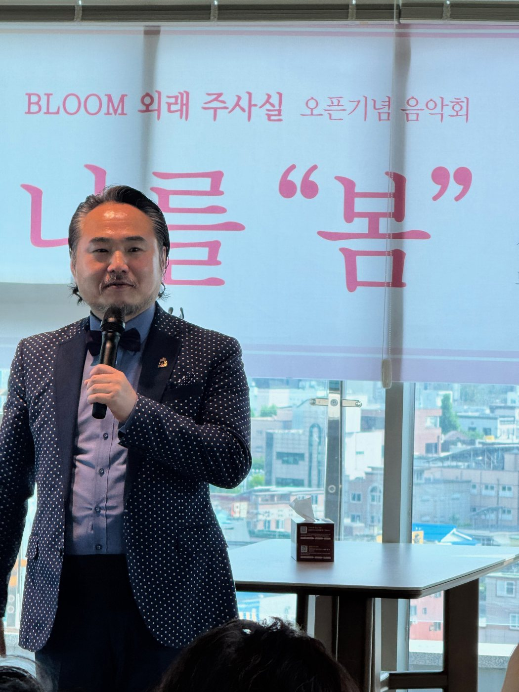
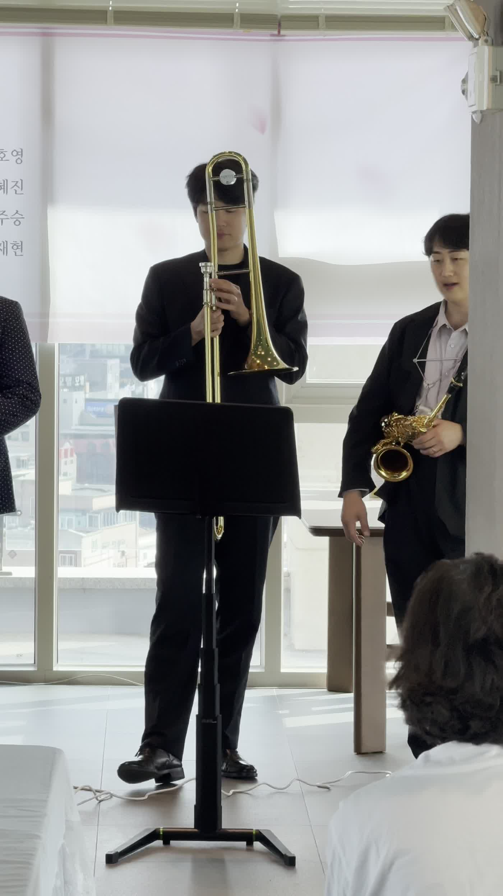
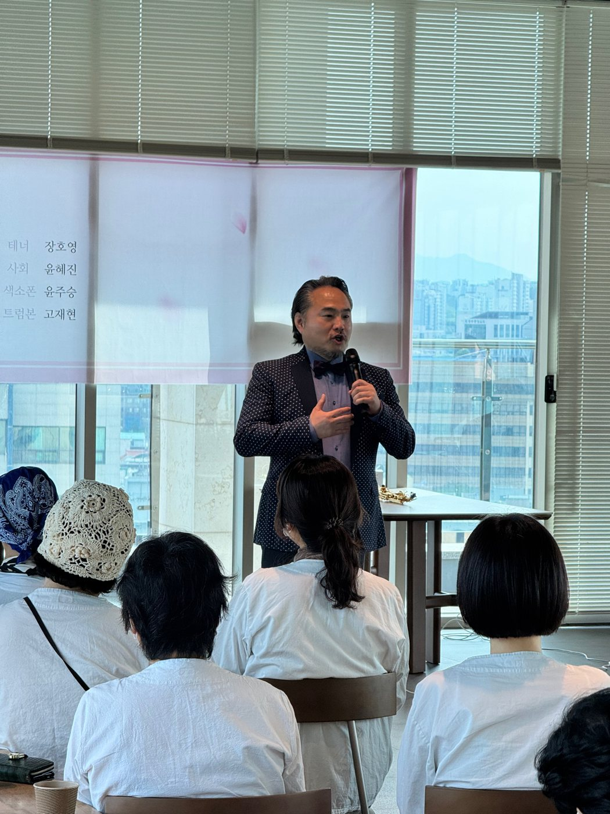
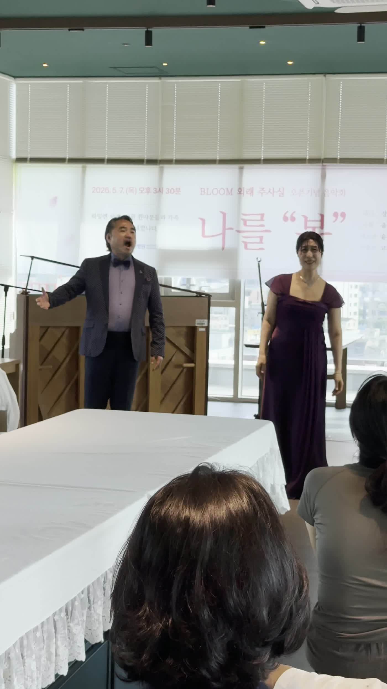
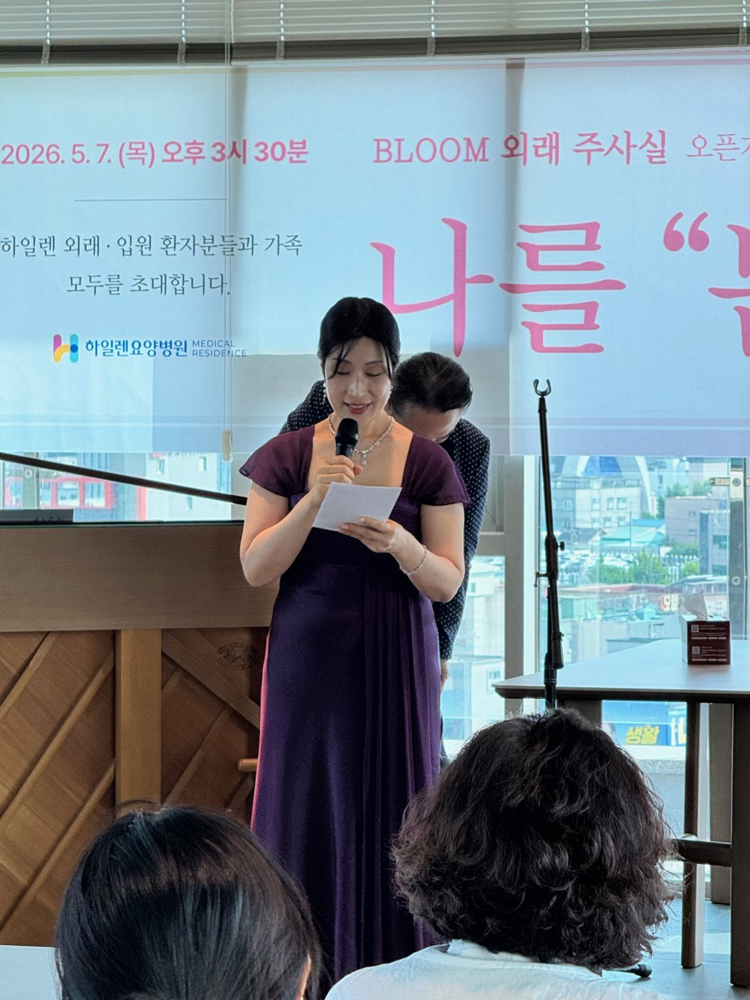

암 치료의 모든 시기를 함께합니다. 수술 직후, 항암·방사선 치료 중, 표준 치료 후 체력 회복, 진행성 암의 통증 완화까지 입원·단기입원·외래로 관리합니다. 광주시립미술관·하정웅미술관 바로 앞에 있습니다.
요가, 라인댄스, 편백숲 트레킹, 캘리그라피, 매듭공예, 다도를 매주 합니다. 음악회와 초청 특강은 10층 스카이라운지에서 합니다.


외래센터 BLOOM 개원 기념 음악회입니다. 사회는 암경험자 소프라노가 맡아 곡마다 해설했습니다. 테너 장호영의 한국 가곡, 색소폰·트럼본 연주가 이어졌고, 마지막 「고향의 봄」은 무대와 객석이 함께 불렀습니다.








영산강 사람들의 삶과 고향, 우리말의 뿌리를 써 오신 시인님과
환자분들이 함께하는 자리를 어떤 형태로 만들면 좋을지,
전화로 여쭙겠습니다.
연락 주실 곳